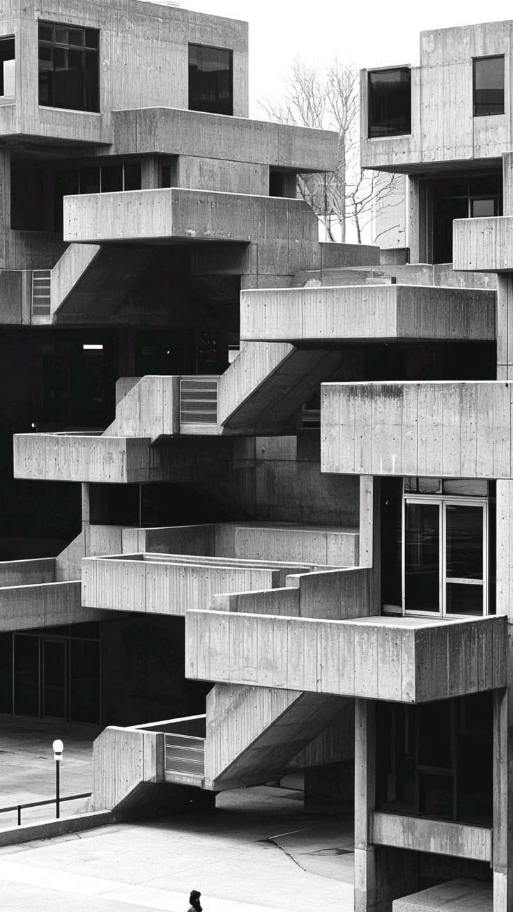
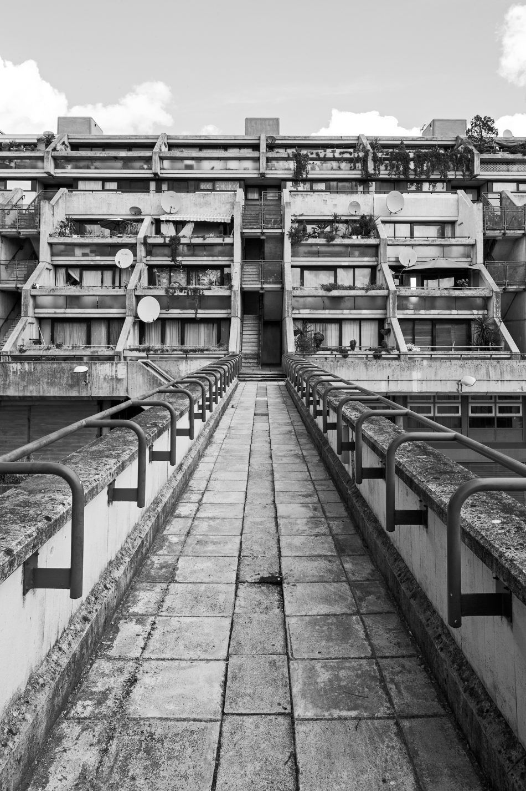
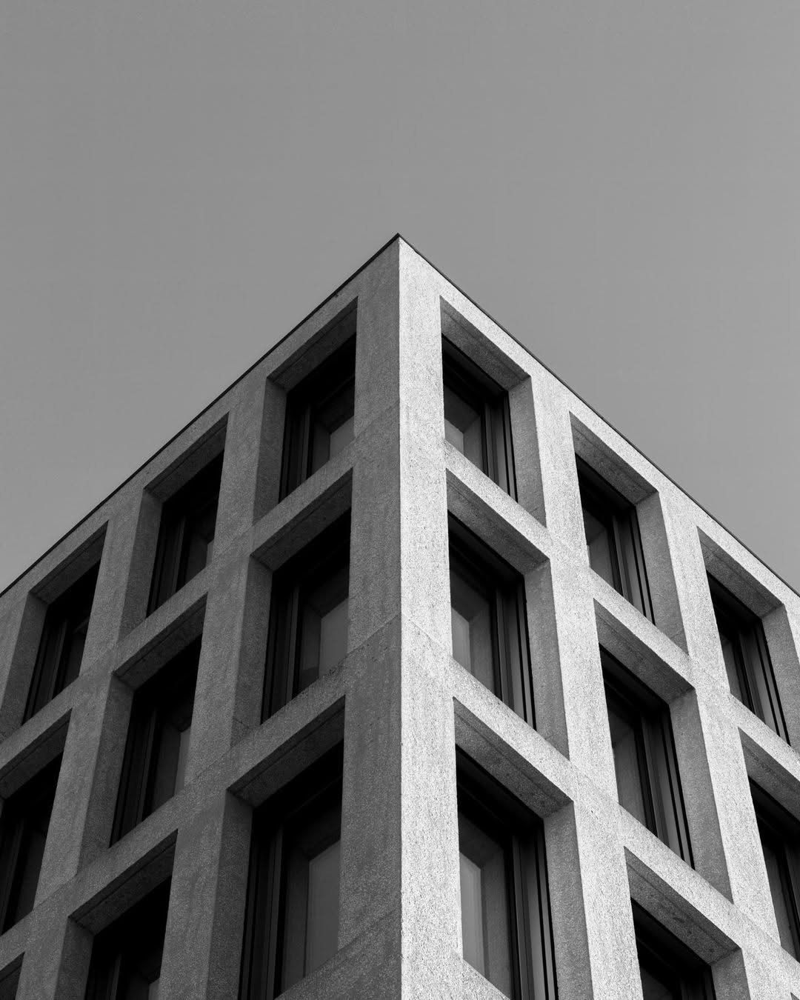
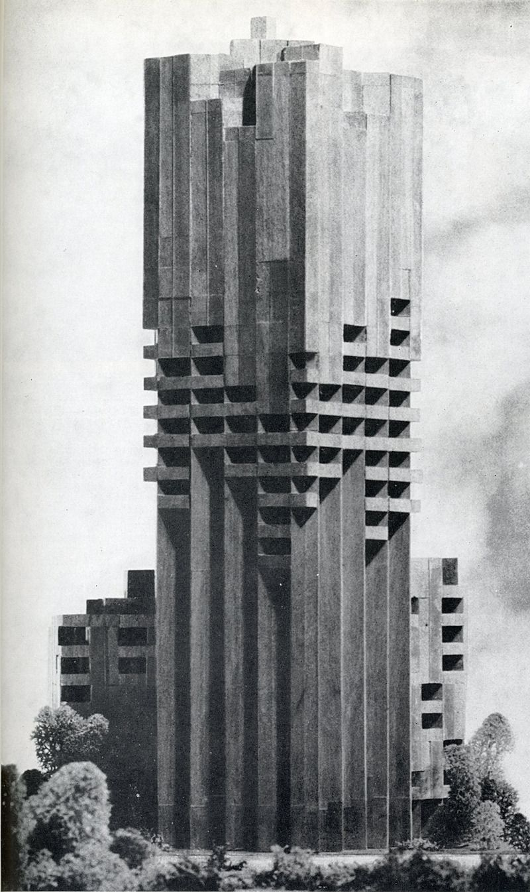

Everyone knows the Bauhaus. Fewer know what was being built in Chicago.




Stacked concrete housing units against a pale sky
Walkway toward a terraced concrete estate
Grid of deep-set windows on a concrete facade
Stepped concrete tower above the trees
Ask a designer where modern design comes from and the answer is usually one word: Bauhaus. The school in Weimar and Dessau is taught, quoted and imitated more than any other source of the modern movement.
That answer is not wrong. It is incomplete. Modernism grew in several places at once, and each place worked under its own conditions: its own materials, clients, laws and politics.
In the Netherlands there was De Stijl. In the Soviet Union there were the Constructivists. In the United States there was a long line of architects who worked with steel frames, reinforced concrete, mass production and very large open land, often decades before the European manifestos reached American schools.
This archive is about that American line. It starts in Chicago in the 1880s, with the first tall office buildings, and runs through the Prairie houses, the California experiments in concrete, the desert work of the Southwest and the large civic buildings of the postwar decades.
The United States had room. Cities were growing fast, land was cheap and industry was eager to test new materials. Architects could try a system, see it fail, and try again on the next commission. That condition shaped the work as much as any theory did.
It also produced a different attitude to the landscape. Many of the architects here treated the site as the first drawing: the slope, the sun, the view, the local stone. The building answered to the ground before it answered to a style.
The folders are grouped by approach rather than by date. Early and organic work sits beside regional building; sculptural work sits beside the heavy monumental institutions of the second half of the century.
Chicago is the first stop. After the fire of 1871 the city rebuilt its center in two decades, and the office building became a new type: a steel skeleton, fireproof clay tile, elevators, electric light and a facade that had to say something about all of it. Engineers and architects sat in the same rooms, and the tall office was argued over in journals, lectures and contracts.
The prairie house came next, a few miles west of the Loop. Low roofs, bands of windows and a central fireplace replaced the parlor and the attic. The plan opened up; rooms ran into each other; the house was drawn from the inside out and then fitted to a flat Midwestern lot. Much of this happened before 1910.
On the West Coast the conditions were different again. Mild weather, earthquakes, Spanish missions, cheap concrete and a steady stream of new residents produced white cubic houses with courtyards and pergolas, and later the timber and glass houses of the postwar years. In the Southwest, rubble stone, logs and adobe were used for hotels and stations on the railway lines.
After the Second World War the scale changed. Universities, museums, capitals and corporate campuses commissioned buildings meant to represent institutions for a century. Concrete took over from steel as the material of choice, and daylight, mass and the section of a building became the main subjects of design.
None of this happened in isolation. European architects emigrated to the United States in the 1930s, taught at American schools and built American buildings. Americans travelled to Europe and brought back ideas. The line drawn in this archive is a matter of emphasis, not a border.
Some names will look out of place on a list of early modernists. They are here because they carried the same questions forward and answered them with the tools of their own time.
Three threads run through the whole collection:
Industrial materials and systems used to build faster, taller and cheaper.
Buildings set into their landscape instead of placed on top of it.
Form taken from structure, use and climate rather than from applied decoration.
Each folder holds a short biography, notes on a few buildings, drawings and photographs. The drawings are redrawn for this archive; the photographs come from public image boards and are credited in the source files.
The site is laid out like a desk in a reading room: folders on the table, papers clipped to the sheets, a ruler and a pair of compasses left where the last reader put them. Pieces can be moved around.
The dates and places are checked against public records. The descriptions are short on purpose.
Start with any folder.
Tillman Desk, archive editors